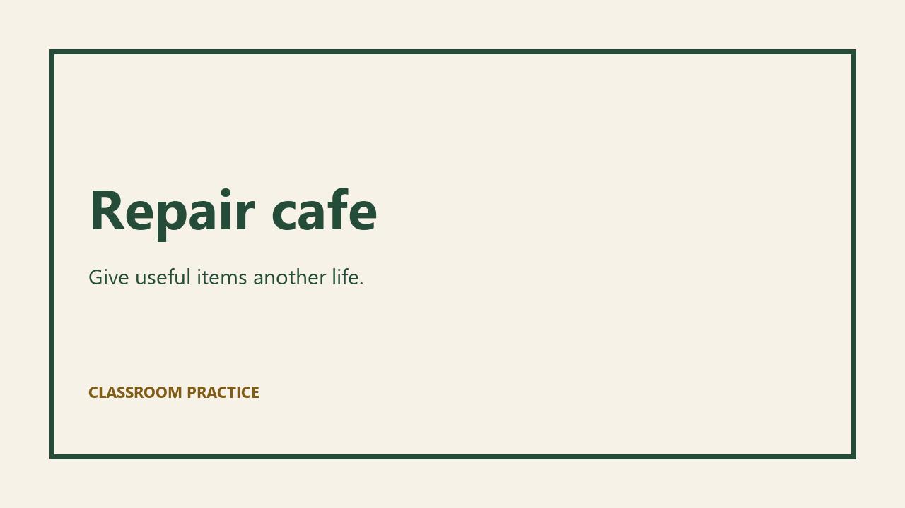

AIT ATAR · OPTIONAL PRACTICE
Edit a multi-track teaching sequence
A 12-second browser starter with separate picture, title, voice and tone roles. Press Play to start media. Edits stay in this page unless you download the plan.

Keep an editable plan
A plan stores titles and tone gain, not a rendered video. Media source files must travel with it.
Transcript and visual information
Repair cafe. Give useful items another life. Bring a small item and talk to a volunteer. Hall two. Saturday at ten. This is a fictional classroom event.
The picture sequence shows the event title, a help invitation and Hall 2 / Saturday 10 am. The generated supporting tone adds no factual information.
For a final video, check media alternatives, player behaviour, synchronisation and the actual export. Browser timers are not a frame-accurate editing engine.